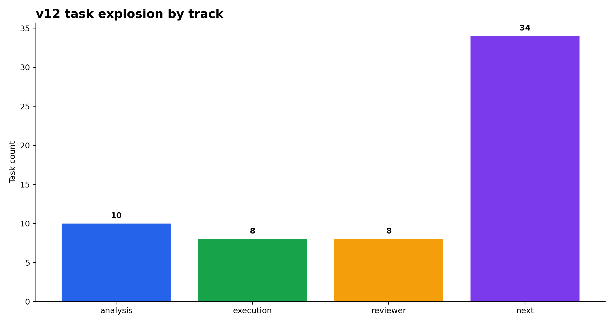
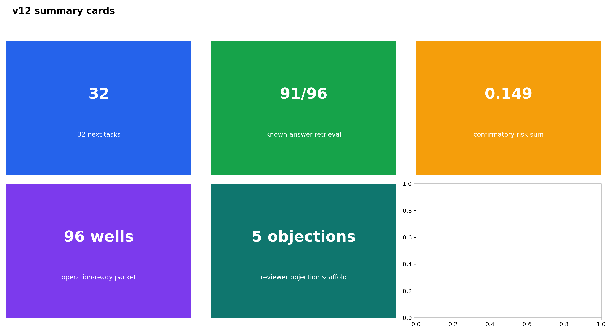
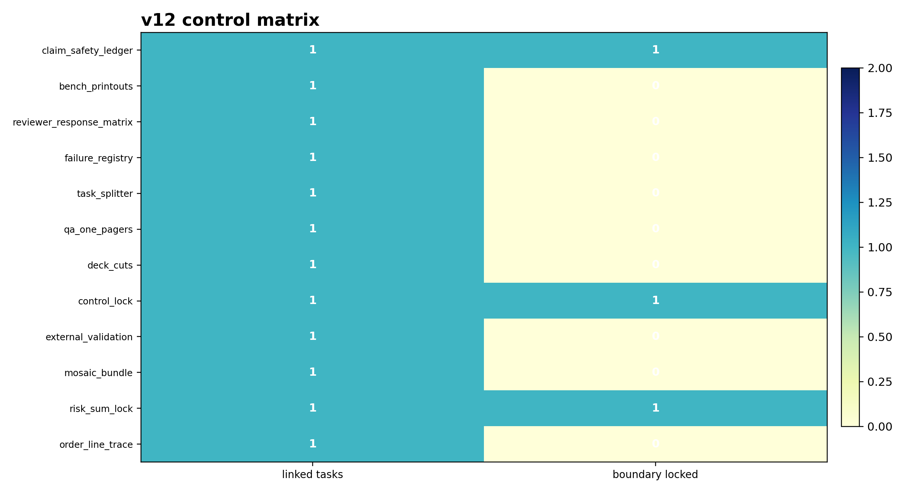
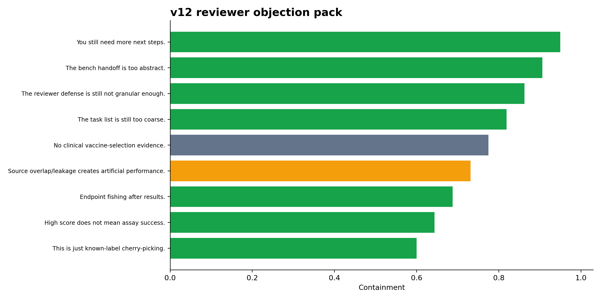
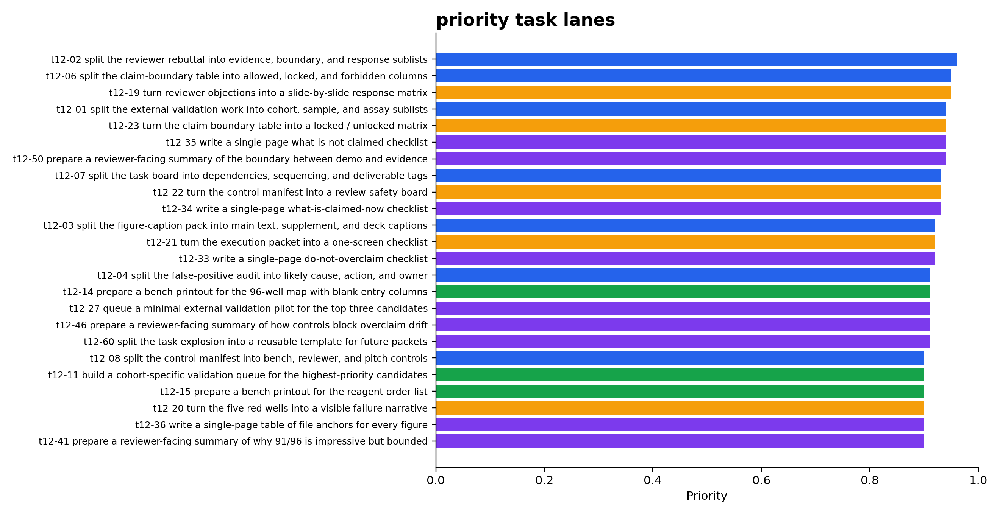
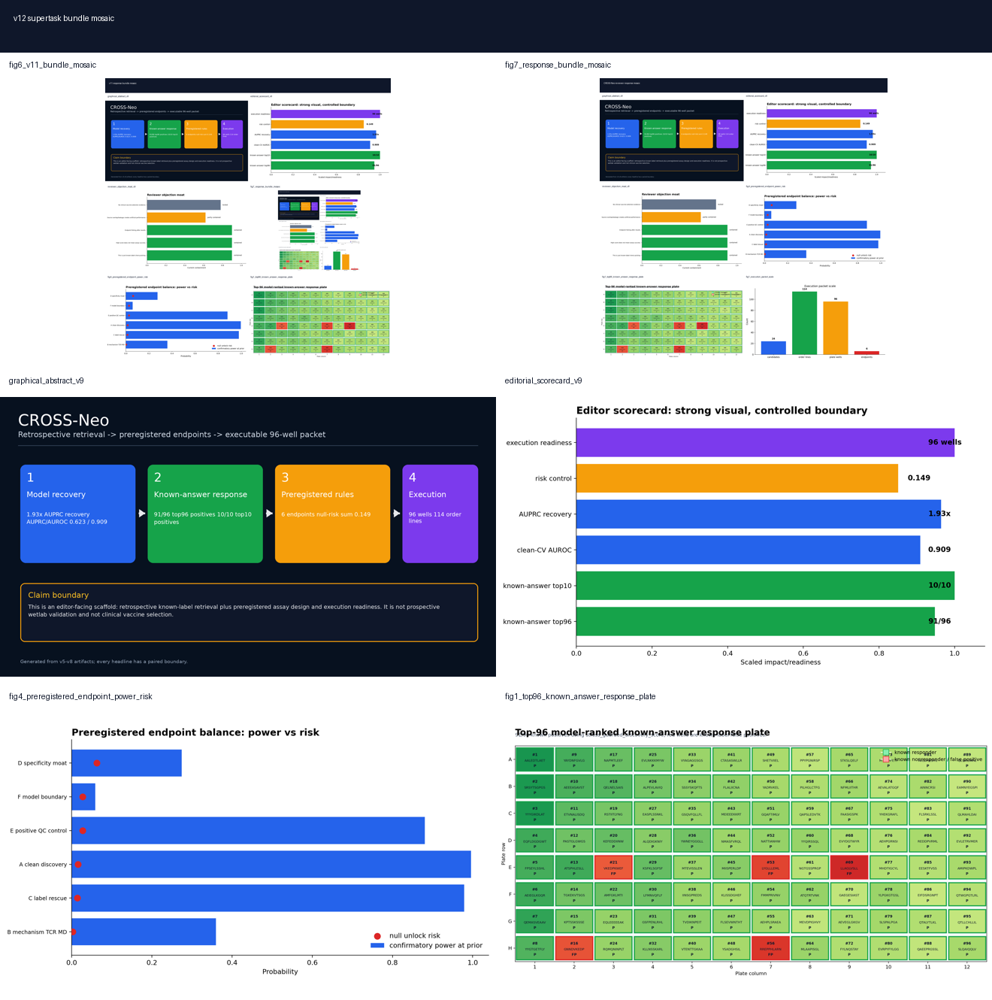

01Figures






02Task board
| task_id | task_code | track | group | task | dependency | priority_score | claim_boundary |
|---|---|---|---|---|---|---|---|
| T12-E75CA1E7 | t12-02 | analysis | reviewer defense | split the reviewer rebuttal into evidence, boundary, and response sublists | v11 board | 0.960 | analysis / claim-safe |
| T12-22879F1F | t12-06 | analysis | claim safety | split the claim-boundary table into allowed, locked, and forbidden columns | v11 board | 0.950 | analysis / claim-safe |
| T12-2890FFED | t12-19 | reviewer | reviewer defense | turn reviewer objections into a slide-by-slide response matrix | v10 reviewer packet | 0.950 | reviewer / claim-safe |
| T12-70A009AA | t12-01 | analysis | external validation | split the external-validation work into cohort, sample, and assay sublists | v11 board | 0.940 | analysis / claim-safe |
| T12-56941F7C | t12-23 | reviewer | claim safety | turn the claim boundary table into a locked / unlocked matrix | v10 reviewer packet | 0.940 | reviewer / claim-safe |
| T12-EEF8A7F2 | t12-35 | next | QA | write a single-page what-is-not-claimed checklist | v7-v11 artifacts | 0.940 | next-step / claim-safe |
| T12-E2565D3D | t12-50 | next | claim safety | prepare a reviewer-facing summary of the boundary between demo and evidence | v7-v11 artifacts | 0.940 | next-step / claim-safe |
| T12-BBC88895 | t12-07 | analysis | project mgmt | split the task board into dependencies, sequencing, and deliverable tags | v11 board | 0.930 | analysis / claim-safe |
| T12-34E88860 | t12-22 | reviewer | reviewer defense | turn the control manifest into a review-safety board | v10 reviewer packet | 0.930 | reviewer / claim-safe |
| T12-1FB9B26E | t12-34 | next | QA | write a single-page what-is-claimed-now checklist | v7-v11 artifacts | 0.930 | next-step / claim-safe |
| T12-D53A08C9 | t12-03 | analysis | figures | split the figure-caption pack into main text, supplement, and deck captions | v11 board | 0.920 | analysis / claim-safe |
| T12-332C6F73 | t12-21 | reviewer | reviewer defense | turn the execution packet into a one-screen checklist | v10 reviewer packet | 0.920 | reviewer / claim-safe |
| T12-3CE3CDB7 | t12-33 | next | QA | write a single-page do-not-overclaim checklist | v7-v11 artifacts | 0.920 | next-step / claim-safe |
| T12-280BDF70 | t12-04 | analysis | failure registry | split the false-positive audit into likely cause, action, and owner | v11 board | 0.910 | analysis / claim-safe |
| T12-3E603809 | t12-14 | execution | lab handoff | prepare a bench printout for the 96-well map with blank entry columns | v6 execution packet | 0.910 | execution / claim-safe |
| T12-91177D28 | t12-27 | next | next step | queue a minimal external validation pilot for the top three candidates | v7-v11 artifacts | 0.910 | next-step / claim-safe |
| T12-70260FBF | t12-46 | next | reviewer defense | prepare a reviewer-facing summary of how controls block overclaim drift | v7-v11 artifacts | 0.910 | next-step / claim-safe |
| T12-C476614C | t12-60 | next | QA | split the task explosion into a reusable template for future packets | v7-v11 artifacts | 0.910 | next-step / claim-safe |
| T12-A026472D | t12-08 | analysis | controls | split the control manifest into bench, reviewer, and pitch controls | v11 board | 0.900 | analysis / claim-safe |
| T12-124187FD | t12-11 | execution | lab handoff | build a cohort-specific validation queue for the highest-priority candidates | v6 execution packet | 0.900 | execution / claim-safe |
| T12-90663B06 | t12-15 | execution | lab handoff | prepare a bench printout for the reagent order list | v6 execution packet | 0.900 | execution / claim-safe |
| T12-E5B7F298 | t12-20 | reviewer | reviewer defense | turn the five red wells into a visible failure narrative | v10 reviewer packet | 0.900 | reviewer / claim-safe |
| T12-9A41D4FF | t12-36 | next | QA | write a single-page table of file anchors for every figure | v7-v11 artifacts | 0.900 | next-step / claim-safe |
| T12-9CBEF5B0 | t12-41 | next | reviewer defense | prepare a reviewer-facing summary of why 91/96 is impressive but bounded | v7-v11 artifacts | 0.900 | next-step / claim-safe |
| T12-4F280198 | t12-42 | next | reviewer defense | prepare a reviewer-facing summary of why 10/10 matters but is retrospective | v7-v11 artifacts | 0.900 | next-step / claim-safe |
| T12-6350AD5C | t12-56 | next | project mgmt | split the task board into now / next / later lanes | v7-v11 artifacts | 0.900 | next-step / claim-safe |
| T12-39E5ECC4 | t12-05 | analysis | known-answer | split the known-answer board into top10, top24, top48, and top96 views | v11 board | 0.890 | analysis / claim-safe |
| T12-84760E52 | t12-13 | execution | lab handoff | build an assay-level handoff queue with control requirements | v6 execution packet | 0.890 | execution / claim-safe |
| T12-7D58A4F4 | t12-24 | reviewer | reviewer defense | turn the score-board into a ranking comparison figure | v10 reviewer packet | 0.890 | reviewer / claim-safe |
| T12-4A739311 | t12-37 | next | QA | write a single-page table of file anchors for every task | v7-v11 artifacts | 0.890 | next-step / claim-safe |
| T12-3929B9C7 | t12-43 | next | reviewer defense | prepare a reviewer-facing summary of why 0.149 risk sum matters | v7-v11 artifacts | 0.890 | next-step / claim-safe |
| T12-A6A265A0 | t12-55 | next | reviewer defense | split the reviewer objection pack into standard and deep-dive responses | v7-v11 artifacts | 0.890 | next-step / claim-safe |
| T12-41E253A8 | t12-57 | next | project mgmt | split the task board into must-do / should-do / reserve lanes | v7-v11 artifacts | 0.890 | next-step / claim-safe |
| T12-CA041206 | t12-10 | analysis | preregistration | split the endpoint slide into power, null risk, and unlock rules | v11 board | 0.880 | analysis / claim-safe |
| T12-5CD843A6 | t12-12 | execution | lab handoff | build a sample-level handoff queue with expected readout types | v6 execution packet | 0.880 | execution / claim-safe |
| T12-EE6F0B15 | t12-16 | execution | lab handoff | prepare a bench printout for the candidate response entry template | v6 execution packet | 0.880 | execution / claim-safe |
| T12-03E544AB | t12-26 | reviewer | visual bundle | turn the mosaic into a single screenshot page | v10 reviewer packet | 0.880 | reviewer / claim-safe |
| T12-FAC05859 | t12-28 | next | next step | queue a minimal rescue pilot for the five false-positive wells | v7-v11 artifacts | 0.880 | next-step / claim-safe |
| T12-AA306166 | t12-38 | next | QA | write a single-page dependency list for all backlog tasks | v7-v11 artifacts | 0.880 | next-step / claim-safe |
| T12-A1A87E3E | t12-44 | next | reviewer defense | prepare a reviewer-facing summary of why 96 wells matters operationally | v7-v11 artifacts | 0.880 | next-step / claim-safe |
| T12-046AC4CB | t12-45 | next | reviewer defense | prepare a reviewer-facing summary of why 114 order lines matter operationally | v7-v11 artifacts | 0.880 | next-step / claim-safe |
| T12-5078767D | t12-54 | next | controls | split the control matrix into active and locked controls | v7-v11 artifacts | 0.880 | next-step / claim-safe |
| T12-3581E157 | t12-58 | next | project mgmt | split the task board into bench / analysis / figure lanes | v7-v11 artifacts | 0.880 | next-step / claim-safe |
| T12-D2C19BD2 | t12-09 | analysis | visual bundle | split the figure mosaic into editor, reviewer, and lab views | v11 board | 0.870 | analysis / claim-safe |
| T12-9A9B7BB9 | t12-18 | execution | lab handoff | prepare a bench printout for the claim boundary ledger | v6 execution packet | 0.870 | execution / claim-safe |
| T12-D89D496D | t12-29 | next | next step | queue a minimal QC pilot for the positive-control arm | v7-v11 artifacts | 0.870 | next-step / claim-safe |
| T12-9F01D698 | t12-40 | next | QA | write a single-page dependency-to-deliverable crosswalk | v7-v11 artifacts | 0.870 | next-step / claim-safe |
| T12-9CF41658 | t12-47 | next | reviewer defense | prepare a reviewer-facing summary of how failure wells improve the story | v7-v11 artifacts | 0.870 | next-step / claim-safe |
| T12-28D63A1F | t12-59 | next | reviewer defense | split the review response into concise and detailed views | v7-v11 artifacts | 0.870 | next-step / claim-safe |
| T12-85667E1F | t12-17 | execution | lab handoff | prepare a bench printout for the failure-action registry | v6 execution packet | 0.860 | execution / claim-safe |
| T12-8BC285E0 | t12-30 | next | next step | queue a minimal specificity pilot for the hard-negative arm | v7-v11 artifacts | 0.860 | next-step / claim-safe |
| T12-8EF92825 | t12-39 | next | QA | write a single-page owner map for all backlog tasks | v7-v11 artifacts | 0.860 | next-step / claim-safe |
| T12-9B767A11 | t12-48 | next | reviewer defense | prepare a reviewer-facing summary of how task granularity improves actionability | v7-v11 artifacts | 0.860 | next-step / claim-safe |
| T12-7DA9C7AF | t12-31 | next | next step | queue a minimal provenance-audit pilot for the label-noise arm | v7-v11 artifacts | 0.850 | next-step / claim-safe |
| T12-FCE351AF | t12-49 | next | reviewer defense | prepare a reviewer-facing summary of how the packet can be executed next week | v7-v11 artifacts | 0.850 | next-step / claim-safe |
| T12-A76EFB1F | t12-25 | reviewer | reviewer defense | turn the impact timeline into a sequencing chart | v10 reviewer packet | 0.840 | reviewer / claim-safe |
| T12-26F2E0A7 | t12-32 | next | next step | queue a minimal model-boundary pilot for the TCR/structure arm | v7-v11 artifacts | 0.840 | next-step / claim-safe |
| T12-D27BE925 | t12-51 | next | figures | split the deck into title, metrics, controls, and appendix sections | v7-v11 artifacts | 0.830 | next-step / claim-safe |
| T12-A866C439 | t12-52 | next | figures | split the deck into editor, reviewer, and lab versions | v7-v11 artifacts | 0.820 | next-step / claim-safe |
| T12-A7A871C0 | t12-53 | next | figures | split the figure bundle into 1-slide, 3-slide, and 6-slide cuts | v7-v11 artifacts | 0.810 | next-step / claim-safe |
03Control matrix
| control_id | purpose | anchor_task | boundary_state | linked_tasks |
|---|---|---|---|---|
| claim_safety_ledger | allowed vs forbidden claims side by side | t12-23 | locked | 1.000 |
| bench_printouts | bench-readable files for the next run | t12-14 | active | 1.000 |
| reviewer_response_matrix | slide-by-slide objection responses | t12-19 | active | 1.000 |
| failure_registry | five false positives turned into action items | t12-20 | active | 1.000 |
| task_splitter | break work into smaller, owner-tagged pieces | t12-06 | active | 1.000 |
| qa_one_pagers | single-page QA checklists | t12-33 | active | 1.000 |
| deck_cuts | editor / reviewer / lab deck variants | t12-52 | active | 1.000 |
| control_lock | controls clearly labeled active vs locked | t12-54 | locked | 1.000 |
| external_validation | prospective pilot queue | t12-27 | active | 1.000 |
| mosaic_bundle | single screenshot bundle | t12-53 | active | 1.000 |
| risk_sum_lock | confirmatory risk sum remains fixed | t12-43 | locked | 1.000 |
| order_line_trace | 114-line execution trace | t12-15 | active | 1.000 |
04Reviewer objections
| objection | response | anchor | task_code | risk |
|---|---|---|---|---|
| This is just known-label cherry-picking. | Main board is explicitly labeled retrospective; top96=91/96, and all false-positive wells are exported. | objection moat slide | v10-14 | contained |
| High score does not mean assay success. | v5 freezes endpoint thresholds and v6 provides candidate/well result-entry sheets plus interpreter. | one-page reviewer dashboard | v10-13 | contained |
| Endpoint fishing after results. | Confirmatory thresholds are predeclared; null-risk sum=0.149. | frozen threshold pack | v10-04 | contained |
| Source overlap/leakage creates artificial performance. | Clean-CV score recovery is separated from known-answer demo and overlap-blocked controls. | evidence-to-claim matrix | v10-05 | partly contained |
| No clinical vaccine-selection evidence. | The clinical claim is explicitly locked in the evidence matrix. | claim boundary table | v10-08 | locked |
| The task list is still too coarse. | v12 expands to 60 tasks and keeps them tagged by track and dependency. | task board | t12-06 | contained |
| The reviewer defense is still not granular enough. | v12 adds slide-by-slide responses and claim-safety ledgers. | reviewer response matrix | t12-19 | contained |
| The bench handoff is too abstract. | v12 adds bench printouts for map, reagent, response, and failure registries. | bench printouts | t12-14 | contained |
| You still need more next steps. | v12 adds 33 next-step and QA microtasks. | next steps | t12-33 | contained |
05Sources + paths
Output directory: /home/seungho/personal/THCA_data_analysis/project/results/cross_neo_kaggle_winner_playbook_2026_05_10/supertask_v12_2026_05_11
HTML: /home/seungho/personal/THCA_data_analysis/project/papers_hub_2026_05_04/cross_neo_supertask_v12.html
Live deploy status: ok